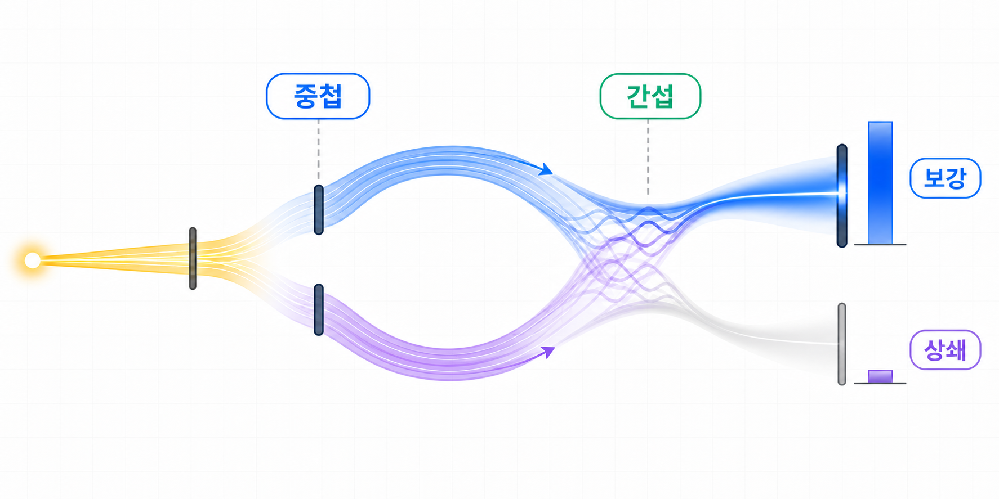

4장. 중첩은 무엇이고 간섭은 무엇일까?
1장과 2장에서는 한 큐비트 상태를 |0⟩ 방향의 진폭과 |1⟩ 방향의 진폭으로 읽어봤어요.
이제부터는 그 진폭이 한 곳에만 머무르지 않고, 여러 방향에 함께 놓였다가 다시 같은 측정 결과값 쪽으로 모이는 상황을 보게 될 거예요.
여기서부터는 말이 조금 낯설 수 있어요. 그래도 지금은 중첩과 간섭을 완벽히 외우려고 하지 말고, 진폭이 “나뉜다”와 “다시 만난다”는 흐름만 먼저 잡아봐요.
먼저 아주 단순하게 말하면, 중첩은 진폭이 한 방향에만 있지 않고 여러 방향에 함께 놓인 상태예요.
간섭은 그렇게 나뉘었던 진폭 기여가 같은 측정 결과값에서 다시 만나 서로 더해지거나 상쇄되는 현상이에요.

먼저 하나의 진폭이 어디에 놓여 있는지 보자
|0⟩ 상태는 측정 결과값 0의 진폭이 1이고, 측정 결과값 1의 진폭이 0인 상태예요.
다시 말해 상태의 모든 진폭이 |0⟩ 방향에 놓여 있어요.
이 상태를 바로 측정하면 측정 결과값 0이 100% 나와요.
아직은 진폭이 나뉘어 있지 않으므로, 중첩이나 간섭을 이야기할 만한 상황이 아니에요.
중첩은 진폭이 여러 기준 상태 방향에 함께 놓인 상황이에요
어떤 게이트는 한쪽에 모여 있던 진폭을 여러 기준 상태 방향으로 나눠 보내요.
|0⟩ 상태에 적용하면, 상태는 아래처럼 바뀌어요.
여기서는 |0⟩ 방향에도 진폭이 있고, |1⟩ 방향에도 진폭이 있어요.
이렇게 둘 이상의 기준 상태가 하나의 상태를 이루는 데 함께 참여하면, 그 상태를 중첩 상태라고 불러요.
| 상태 | |0⟩ 방향의 진폭 | |1⟩ 방향의 진폭 | 읽는 방법 |
|---|---|---|---|
|0⟩ | 1 | 0 | 한 방향에만 진폭이 있어요 |
H|0⟩ | 1/√2 | 1/√2 | 두 방향에 진폭이 함께 있어요 |
측정하기 전의 상태 자체가 여러 기준 상태 방향의 진폭을 함께 가지고 있다는 뜻이에요.
간섭은 나뉘었던 진폭 기여가 같은 측정 결과값에서 다시 만날 때 생겨요
중첩 상태에 게이트를 한 번 더 적용하면, 각 기준 상태에 있던 진폭이 다시 여러 측정 결과값 쪽으로 기여를 보내요.
이때 서로 다른 출발점에서 온 진폭 기여가 같은 측정 결과값으로 도착할 수 있어요.
|0⟩ 방향에 있던 진폭이 측정 결과값 0과 1 쪽으로 기여를 보내요.
|1⟩ 방향에 있던 진폭도 측정 결과값 0과 1 쪽으로 기여를 보내요.
같은 부호와 같은 위상으로 온 진폭 기여는 서로 보강돼요.
반대로 부호나 위상이 반대로 맞물린 진폭 기여는 서로 상쇄될 수 있어요.
진폭 기여가 같은 방향으로 더해져요
해당 측정 결과값의 진폭이 커지고, 측정 확률도 커져요.
진폭 기여가 서로 지워요
해당 측정 결과값의 진폭이 사라지고, 측정 확률도 0이 돼요.
H 게이트를 두 번 적용하면 어떤 일이 생길까?
앞으로 H 게이트를 자세히 볼 때, |0⟩ 상태에 H 게이트를 한 번 적용하면 중첩 상태가 만들어지는 것을 계산할 거예요.
그리고 같은 큐비트에 H 게이트를 한 번 더 적용하면, 진폭 기여가 보강되고 상쇄되어 다시 |0⟩ 상태로 돌아오는 과정도 볼 거예요.
첫 번째 H 게이트는 한 방향의 진폭을 두 방향으로 나눠요
이 단계에서 |0⟩ 방향과 |1⟩ 방향이 모두 상태 벡터에 참여해요.
두 번째 H 게이트는 두 진폭 기여를 다시 만나게 해요
이 단계에서 |0⟩ 쪽 진폭은 보강되고, |1⟩ 쪽 진폭은 상쇄돼요.
중첩은 진폭이 여러 기준 상태 방향에 놓인 상황이고, 간섭은 그 진폭 기여들이 같은 측정 결과값에서 다시 만날 때 생기는 계산 효과예요.